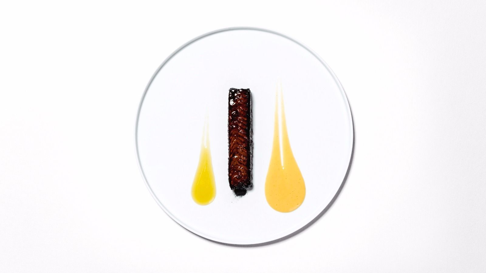
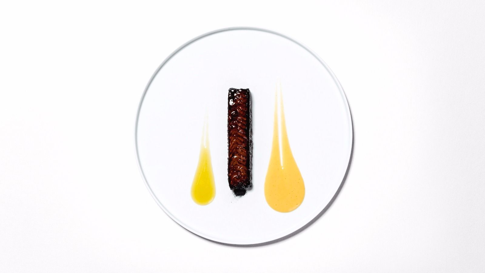
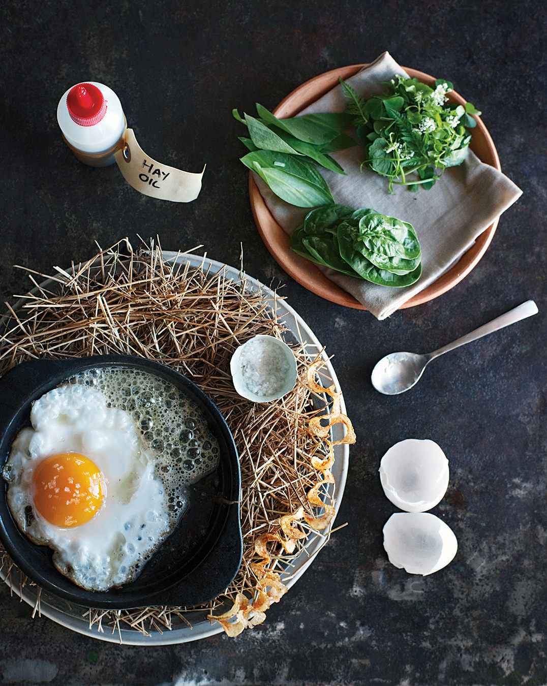
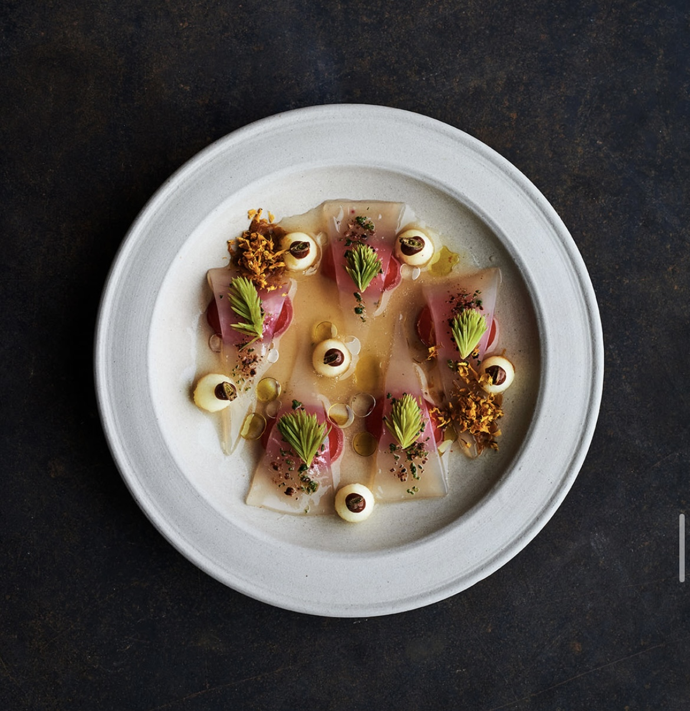
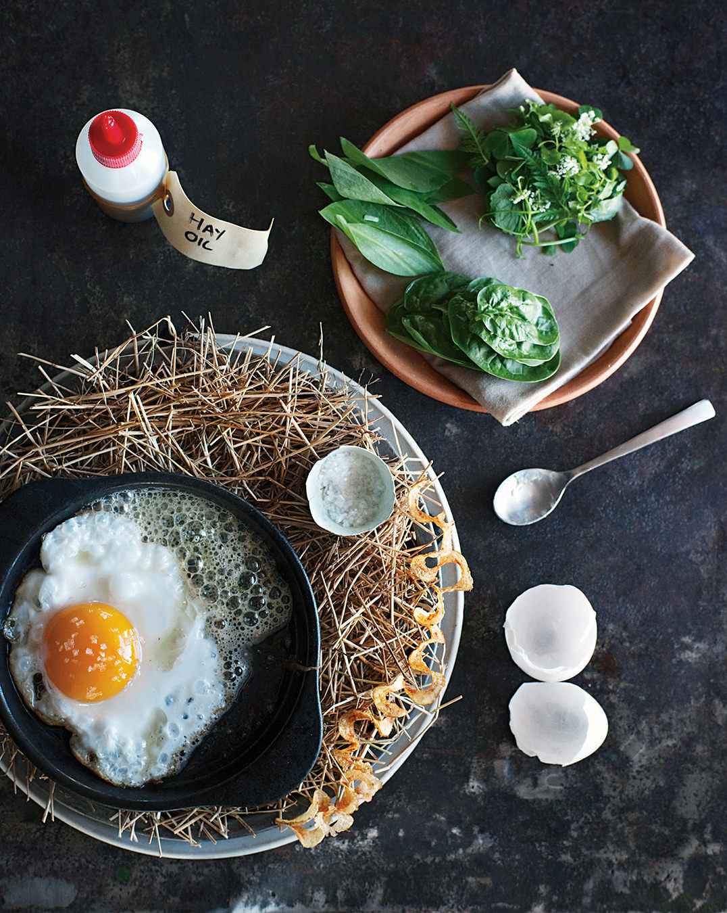
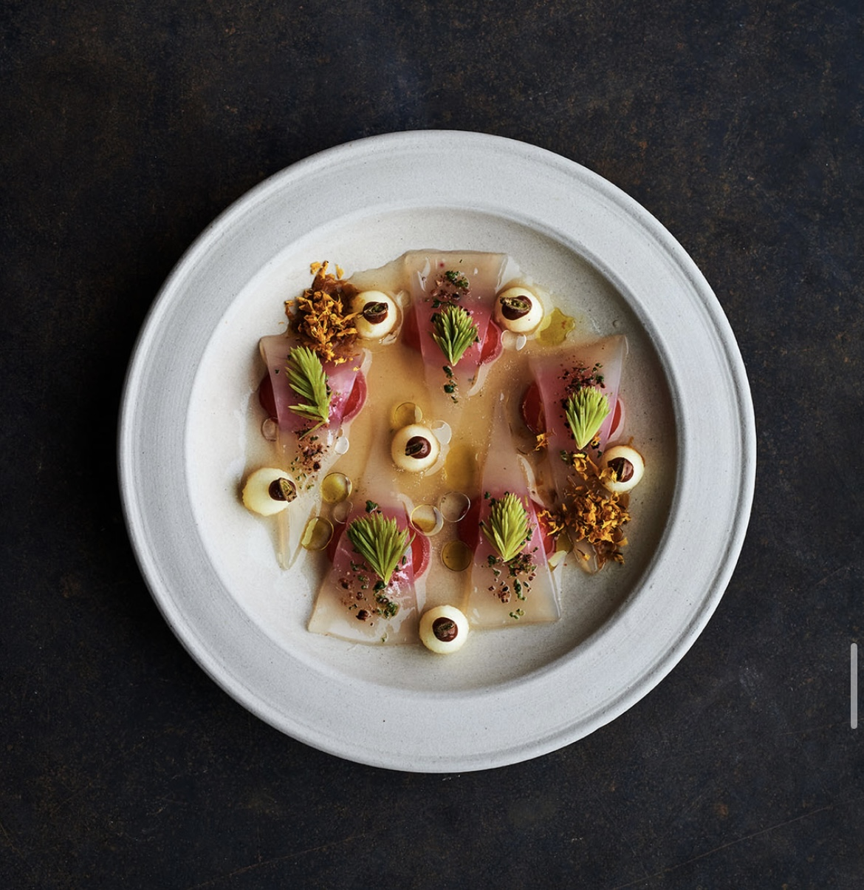
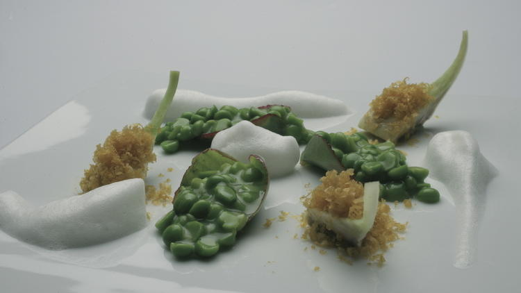
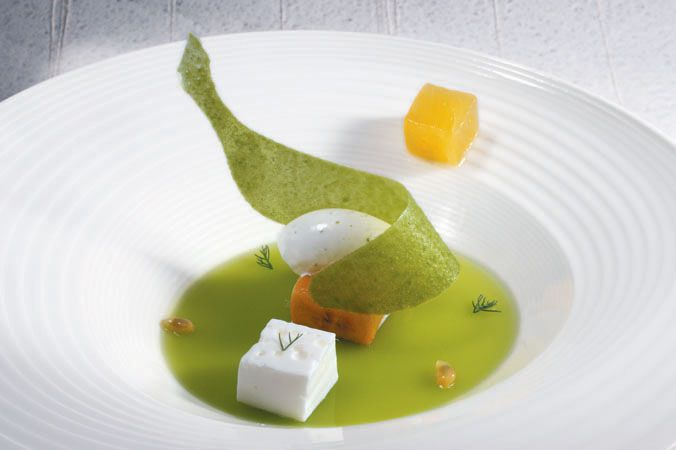
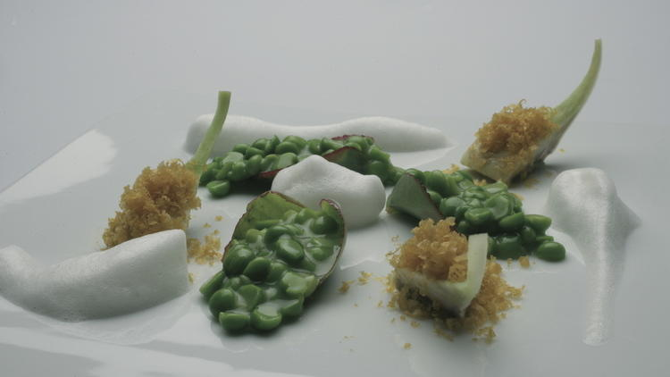
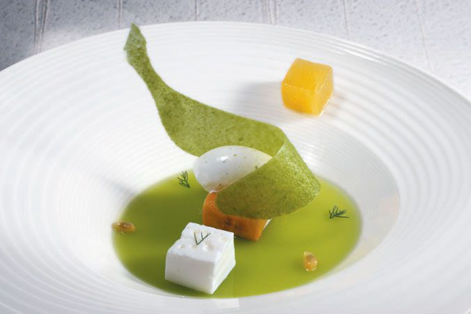

Najpoznatiji europski kuhari

Massimo Bottura
Massimo Bottura je poznati talijanski chef i osnivač restorana Osteria Francescana u Modeni, Italija. Njegov kreativni pristup talijanskoj kuhinji revolucionirao je modernu gastronomiju. Njegova jela su spoj tradicije i umjetnosti s velikim naglaskom na detalje. Bottura je globalni ambasador borbe protiv bacanja hrane. Njegov rad nadilazi kulinarstvo, povezujući društvenu odgovornost i kulturu.
Galerija slika
 


Hélène Darroze
Hélène Darroze je francuska chefica s Michelinovim zvjezdicama i vlasnica više restorana u Parizu i Londonu. Inspiraciju crpi iz obiteljske tradicije i lokalnih sastojaka. Njena jela kombiniraju eleganciju, emociju i sofisticiranost. Poznata je po osobnom pristupu i intuitivnom kuhanju. Sudjelovala je i kao mentorica u MasterChefu.
Galerija slika

René Redzepi
René Redzepi je danski chef poznat po restoranu Noma koji je više puta proglašen najboljim na svijetu. Fokusiran je na nordijsku kuhinju, sezonalnost i fermentaciju. Njegov rad redefinirao je pristup lokalnim sastojcima. Redzepi neprestano istražuje i educira kroz kulinarske projekte. Njegova filozofija spaja prirodu i inovaciju.
Galerija slika


 



Ferran Adrià
Ferran Adrià je španjolski chef i osnivač legendarnog restorana elBulli. Smatra se pionir molekularne gastronomije. Njegov inovativni stil transformirao je shvaćanje hrane. Eksperimentiranjem i dekonstrukcijom jela postavio je nove kulinarske standarde. Danas se bavi edukacijom i istraživanjem kroz projekt elBullifoundation.
Galerija slika
 




Clare Smyth
Clare Smyth je britanska chefica koja je stekla slavu kao prva žena u UK s tri Michelinove zvjezdice. Njen restoran Core u Londonu je vrhunac moderne britanske kuhinje. Smyth kombinira preciznost, tehniku i emociju. Bila je glavna chefica na kraljevskom vjenčanju princa Harryja. Njena karijera je simbol izvrsnosti i inovacije.